We will start by reviewing Linear Models, since they are likely already familiar to you from prior coursework, are widely used, and will serve as a useful (if simple) launching off point for later discussions of more advanced techniques. So, while some of what we will explore in this section might seem pretty basic at first glance, do not let it’s simplicity fool you, as we will revisit similar concepts throughout the rest of the notes, and these concepts will help you form a strong foundation that will serve us well once things get more complex.
This chapter will do this in three parts:
Review the basic setup of a linear model, including notation and how adding features to the linear model can make it behave in ways that would appear “non-linear”.
Review the concept of Regularization — which will essentially penalize model complexity to avoid overfitting.
Discuss different types of commonly used loss functions for linear models, demonstrating their differences and possible use cases.
With this as a baseline model, the next chapter will review the concept of Cross-Validation and how we evaluate whether an Machine Learning model is “good”, and then the subsequent chapter will review (Stochastic) Gradient Descent, in the Linear Model context.
Learning Objectives
By the end of this chapter, you should be able to:
Explain what makes a model linear, and recognize that polynomial and other feature expansions still give linear models.
Describe how a regularization penalty controls model complexity, and connect the \(L_1\), \(L_2\) and general \(L_p\) norms to the shape of that penalty.
Choose a regression loss (squared, absolute, Huber, epsilon-insensitive) for a given noise or outlier situation and explain the consequences of that choice.
Choose a classification loss (hinge, logistic, and the others shown here) and describe how it shapes the decision boundary and treats points near it.
Predict how adding a penalty term moves the optimum of a training objective.
1.1 What is a Linear Model?
Let’s start by trying to fit a model to the (admittedly simple) dataset below, where I have just sampled some (noisy) points from a periodic function:
Code
%matplotlib inlineimport numpy as npimport matplotlib.pyplot as pltfrom sklearn.preprocessing import PolynomialFeaturesfrom sklearn.linear_model import SGDRegressorfrom sklearn.linear_model import SGDClassifierfrom ipywidgets import interact,interact_manual, FloatSliderfrom sklearn.datasets import make_regressionimport seaborn as snssns.set_context('poster')np.random.seed(1)# Number of data pointsn_samples =30# True Function we want to estimatetrue_fun =lambda X: np.cos(1.5* np.pi * X)# Noisy Samples from the true functionX_cos = np.sort(np.random.rand(n_samples))y_cos = true_fun(X_cos) + np.random.randn(n_samples) *0.1plt.figure(figsize=(10,10))# Plot the true function:X_plot = np.linspace(0, 1, 100)plt.plot(X_plot, true_fun(X_plot), '--',label="True function")# Plot the data samplesplt.scatter(X_cos, y_cos, label="Samples")plt.legend(loc="best")plt.show()
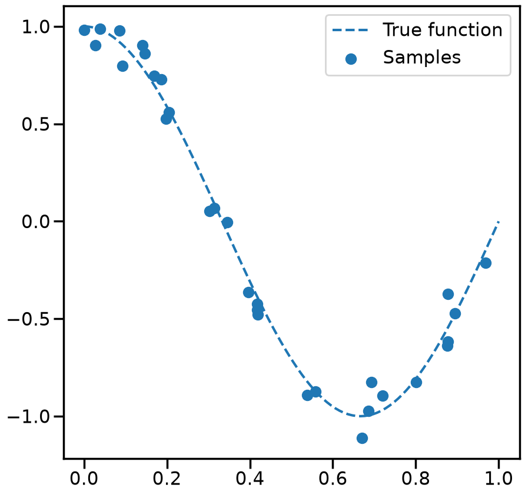
If we wanted to fit a line to this data, we would use what is called a linear model:
\[
y = w_0+w_1\cdot x
\]
where \(w_0\) is the intercept and \(w_1\) is the slope of the line. We can write this more compactly using vector notation as: \[
y = \mathbf{w}^T \mathbf{x}
\] where w is the weight vector [\(w_0\), \(w_1\)] and \(x\) is the feature vector [1, x]. We can see here that taking the dot product between \(w\) and \(x\) is equivalent to the equation above. Importantly, even though the above equation represents a straight line with respect to x, we are not limited to using linear models only for this. For example, we could make:
and in this way, we can model y as a cubic function of x, while \(y = \mathbf{w}^T \mathbf{x}\) remains a “linear model”, since it is still linear with respect to the weights \(w\). This is quite powerful, since by adding features (i.e., additional concatentated entries) to \(\mathbf{x}\), we can fit functions that are apparently non-linear with respect to the original input variable \(x\), but will possess many useful properties of linear models that we will discuss later (e.g., convexity with respect to \(w\)).
TipExperiment: Effect of Polynomial Degree on Model Fit
We can see this in the below experiment, where we fit progressively higher order polynomial functions to the above training data. In each case we are fitting a linear model, by virtue of appending additional polynomial features to x. When you do this experiment, ask yourself:
How does the model fit change as we increase the polynomial degree?
What happens to the training score (\(R^2\)) as we increase the polynomial degree?
Does this increase in the training score reflect what you intuitively expect? Why or why not?
Code
from sklearn.pipeline import Pipelinefrom sklearn.linear_model import LinearRegression# Here is a list of different degree polynomials to try outdegrees = [1,2,3,5,10,15,20,30]# For each of the different polynomial degrees we listed abovefor d in degrees: plt.figure(figsize=(7, 7)) # Make a new figure# Construct the polynomial features polynomial_features = PolynomialFeatures(degree=d, include_bias=False)# Construct linear regression model linear_regression = LinearRegression() pipeline = Pipeline([("polynomial_features", polynomial_features), ("linear_regression", linear_regression)])# Now fit the data first through the # polynomial basis, then do regression pipeline.fit(X_cos[:, np.newaxis], y_cos)# Get the accuracy score of the trained model# on the original training data score = pipeline.score(X_cos[:, np.newaxis], y_cos)# Plot the results X_plot = np.linspace(0, 1, 100) plt.plot(X_plot, pipeline.predict(X_plot[:, np.newaxis]), label="Model") plt.plot(X_plot, true_fun(X_plot), '--',label="True function") plt.scatter(X_cos, y_cos, label="Samples") plt.xlabel("x") plt.ylabel("y") plt.xlim((0, 1)) plt.ylim((-2, 2)) plt.legend(loc="best")# Print the polynomial degree and the training# accuracy in the title of the graph plt.title("Degree {}\nTrain score = {:.3f}".format( d, score)) plt.show()
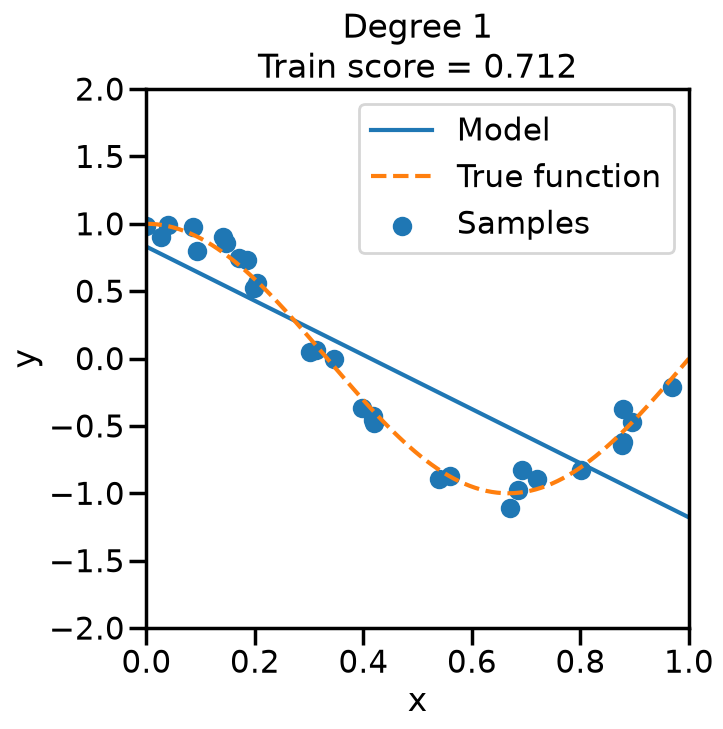
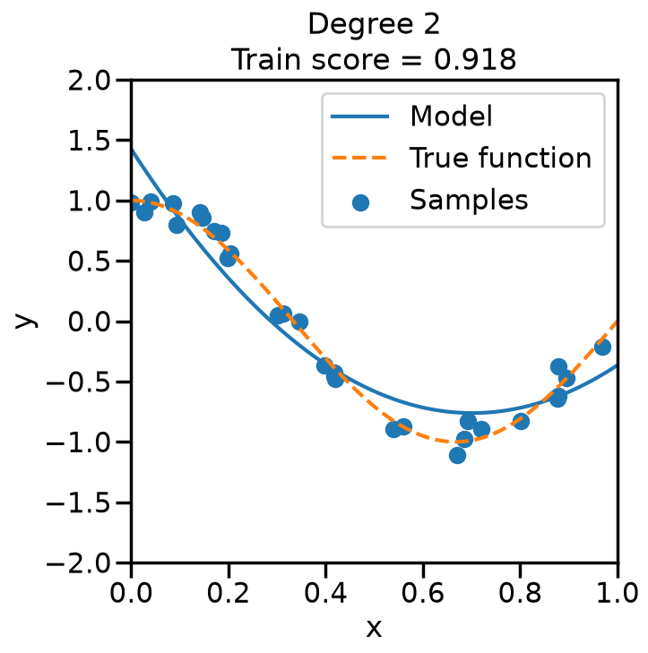
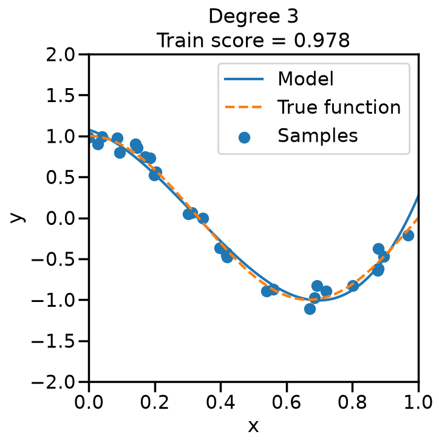
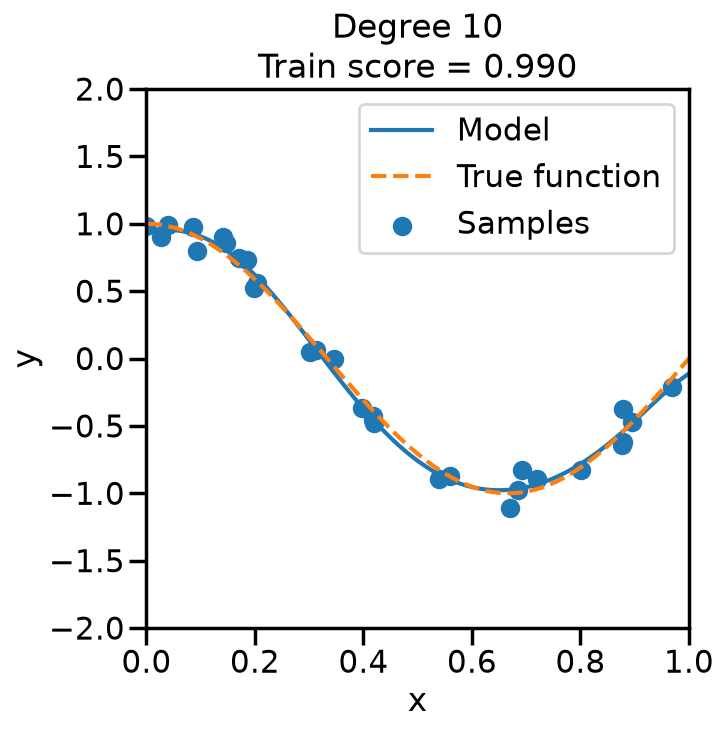
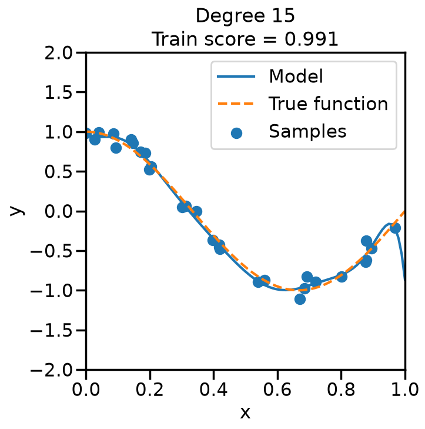
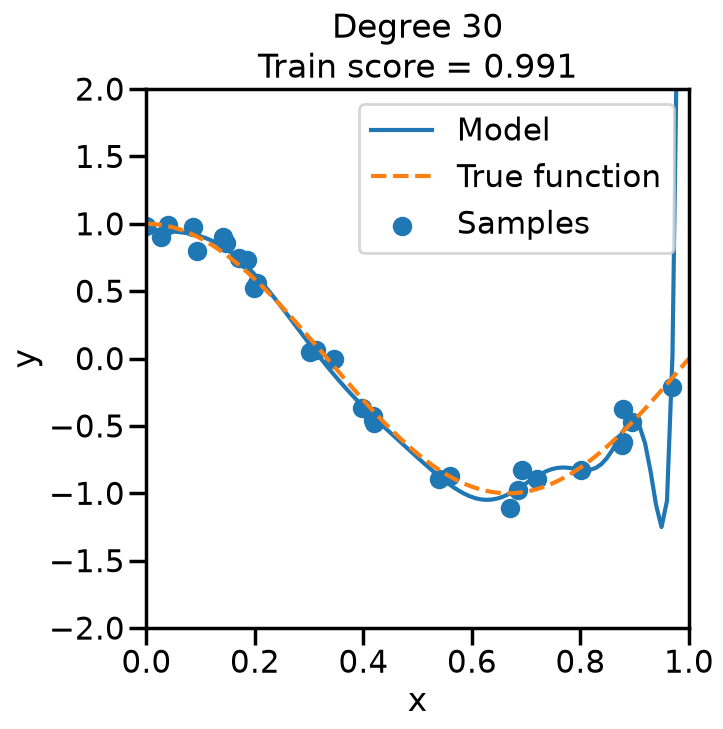
We can see that even though we are fitting a linear model every time, the behavior with respect to x is markedly non-linear. Moreover, we see some strange behavior as we increase the polynomial degree. What is going on here and why is it behaving in this way? To build some intuition, we can take a look at the learned weight coefficients, by accessing the coef_ attribute of the fitted model:
What is going on here? To understand this, we need to understand something about how the model is optimizing error and how we might control this behavior.
1.2 Regularization and Controlling Model Complexity
In the base case above, all the model is trying to do is minimize the Mean Squared Error (MSE) with respect to the training error, and with a sufficient number of parameters (polynomial features, in this case), it becomes possible to always achieve perfect accuracy (i.e., fit every point) in the training data. Unfortunately, as we can see, fitting the training data perfectly does not necessarily lead to a model that generalizes well to new data. To help us control this behavior, we can introduce the concept of Regularization, which is a way of penalizing overly complex models. Specifically, we can modify our cost function to be something like:
\[
Cost = Loss(w,D) + \Omega(w)
\]
where \(\Omega(w)\) represents what we call a “Regularization” of the function or a “Penalty Term” The purpose of \(\Omega(w)\) is to help us prevent the (otherwise complex) model from being overly complicated, by penalizing this complexity. There are many ways to do this that we will see later on, but one common way to do this for linear models is to penalize the total weight that you allow all of the \(w_i\) to have. Specifically how one calculates this total weight turns out to matter a lot, and we shall see it return in later chapters and sections. But to get us started in un-packing how to do this, we first need to talk about what a Norm is, how it relates to Linear Regression weights, and how it helps us perform Regularization.
1.2.1 Norms and their relationship to Regularization
A Norm is a concept in mathematics that allows us to essentially measure length or size, typically of vectors. Any time you have tried to compute the distance between two points in space (say, by using the Pythagorean Theorem), or the magnitude of an applied Force vector, you have been using a Norm — most likely the Euclidean Norm or Euclidean Distance. For example, for a vector \(\mathbf{x}\) with \(n\) dimensions, the Euclidean Norm looks like this: \[
||\mathbf{x}||_2 = \sqrt{ x_1^2 + x_2^2 + \cdots x_n^2 }
\] If you have ever had to compute the total Force Magnitude given its x and y components (for example, in Statics class), you have used the Euclidean Norm to do so. In that context, it served to take multiple components of a Force aggregate them in such a way as to tell you something about the total force – by analogy, we will do the same thing here with linear regression, where each weight is like a component and we can use the Euclidean Norm to compute the total weight.
While Euclidean Norms may be quite useful or familiar to Engineers, it turns out that they are a special case of a much wider family of Norms called p-norms, which are defined as: \[
||\mathbf{x}||_p = \left(|x_1|^p + |x_2|^p+\cdots + |x_n|^p\right)^{1/p} = \left(\sum_{i=1}^n \left| x_i \right|^p \right)^{1/p}
\]
Specifically, the Euclidean Norm is called the L2-norm, or sometimes just the 2-norm. To see why this is, just set \(p=2\) in the above, and note how it corresponds to the Euclidean Norm that we all know and love. So, by setting \(p\) to a number between \(0\) and \(\infty\), we can modify what the total weight means, and setting \(p=2\) is the setting which we are all most familiar with. To get a visual sense of how norms vary, see below, which visualizes a line of “circle” of radius 1, but where the length of the line is determined by the p-norm. You will see that when p=2 this corresponds to what we are familiar with, but when p goes up or down things change.
Code
from ipywidgets import interact, FloatSlider# Define a function to compute and plot the p-norm unit ball in 2Ddef plot_p_norm(p=2.0):# Avoid invalid p valuesif p <=0:print("p must be > 0")return theta = np.linspace(0, 2*np.pi, 400)# Parametric form of p-norm unit circle x = np.cos(theta) y = np.sin(theta)# Normalize to p-norm = 1 denom = (np.abs(x)**p + np.abs(y)**p)**(1/p) x_unit = x / denom y_unit = y / denom plt.figure(figsize=(5,5)) plt.plot(x_unit, y_unit, label=f'p = {p:.2f}') plt.gca().set_aspect('equal', adjustable='box') plt.title(f'Unit Ball in p-norm (p={p:.2f})') plt.legend() plt.grid(True) plt.show()# Interactive slider for pinteract( plot_p_norm, p=FloatSlider(value=2.0, min=0.1, max=10.0, step=0.1, description='p'))
<function __main__.plot_p_norm(p=2.0)>
For today, we will just focus on the L2-Norm, however we will revist norms again later where we will see how changing the one we are using can have positive or negative effects in certain circumstances.
We will use the L2-Norm to help us penalize having linear regression models with really large weights, by essentially putting a cost on the total weight of the weight vector, where the total is measured by the L2-Norm. That is: \[
Cost = \sum_{n=1}^{N}||y-w\cdot x||^2 + \alpha \cdot ||w||^2
\] Where \(\alpha\) is the price we pay for including more weight in the linear model. If it reduces our error cost enough to offset the cost of the increased weight, then that may be worth it to us. Otherwise, we would err on the side of using less weight overall.
This Regularization (i.e., increasing \(\alpha\)) essentially allows you to trade off bias and variance, as we will see below.
TipExperiment: Effect of Increasing Regularization Strength on Polynomial Fit
In the below experiment, we will increase the regularization strength (\(\alpha\)) for a fixed 15-degree polynomial, and observe its effect on the overfitting problem before. Consider the following questions as you observe the experiment below:
What happens when we set \(\alpha\) to a low (close to zero) value?
What happens when we set \(\alpha\) to a high value?
Code
# Import Ridge Regressionfrom sklearn.linear_model import Ridge# alpha determines how much of # a penalty the weights incuralphas = [0, 1e-20, 1e-10, 1e-7, 1e-5, 1, 10, 100]# For the below example, let's# just consider a 15-degree polynomiald=15np.random.seed(100)for a in alphas: plt.figure(figsize=(7, 7)) polynomial_features = PolynomialFeatures(degree=d, include_bias=False)#linear_regression = LinearRegression() #<- Note difference with next line linear_regression = Ridge(alpha=a) pipeline = Pipeline([("polynomial_features", polynomial_features), ("linear_regression", linear_regression)])# Fit model pipeline.fit(X_cos[:, np.newaxis], y_cos)# Get Training Accuracy score = pipeline.score(X_cos[:, np.newaxis], y_cos)# Plot things X_plot = np.linspace(0, 1, 100) plt.plot(X_plot, pipeline.predict(X_plot[:, np.newaxis]), label="Model") plt.plot(X_plot, true_fun(X_plot), '--',label="True function") plt.scatter(X_cos, y_cos, label="Samples") plt.xlabel("x") plt.ylabel("y") plt.xlim((0, 1)) plt.ylim((-2, 2)) plt.legend(loc="best") plt.title("Degree={}, $\\alpha$={}\nTrain score = {:.3f}".format( d, a, score)) plt.show()
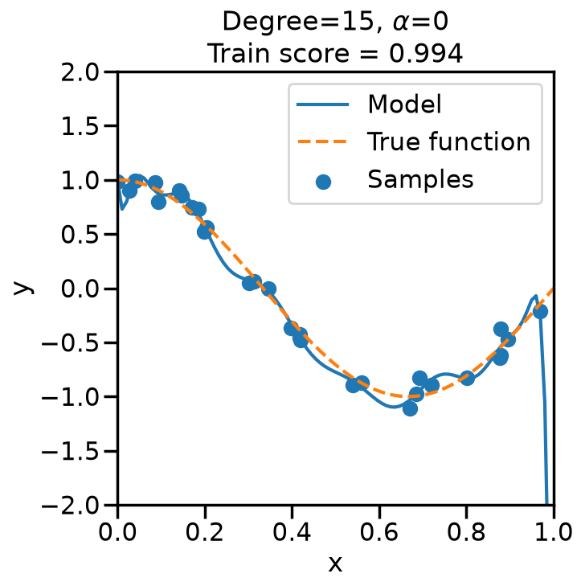
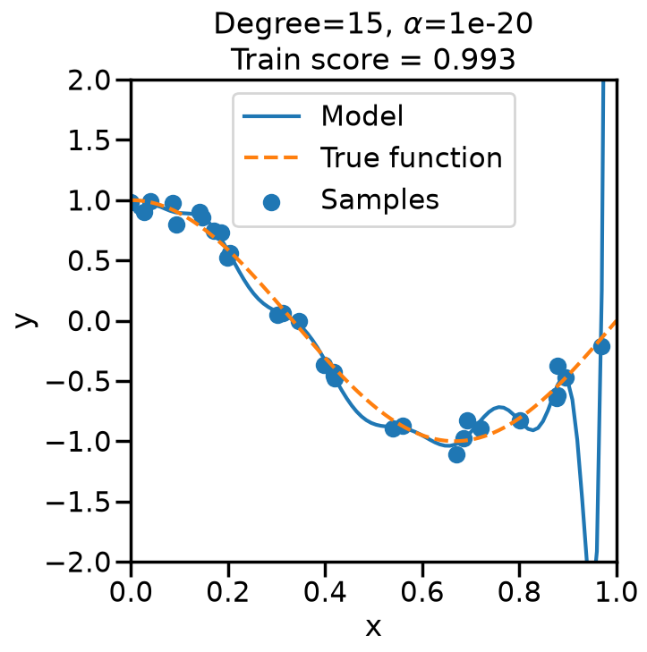
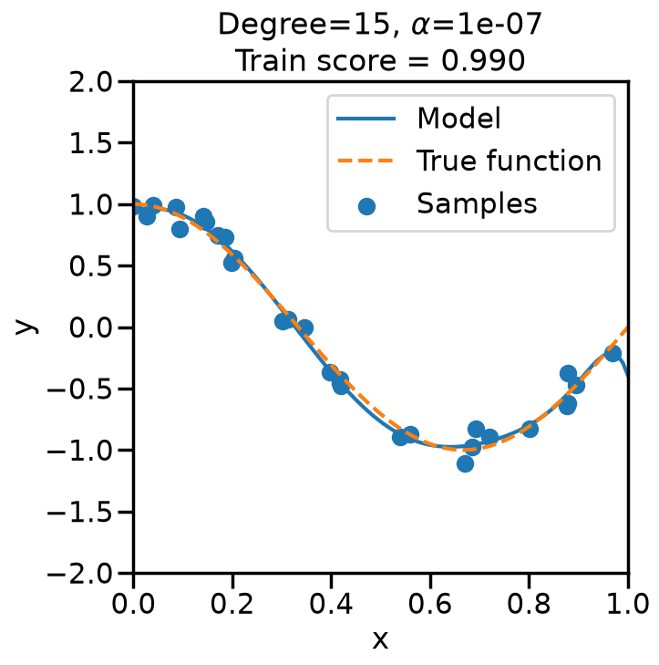
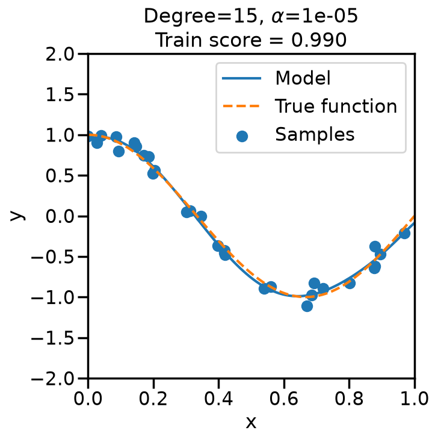
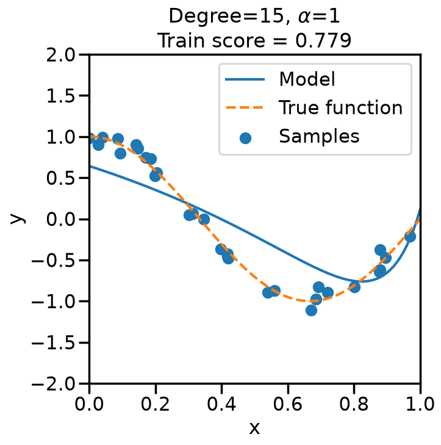
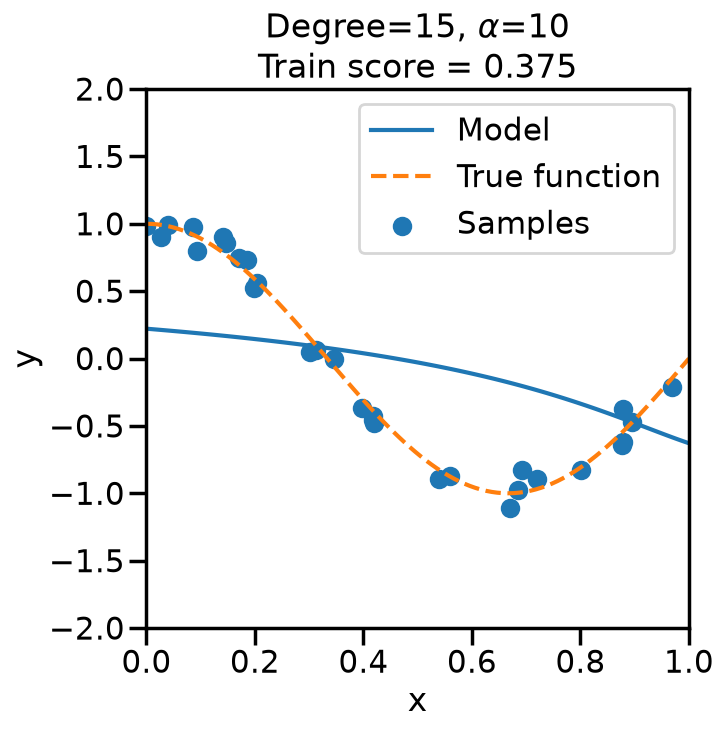
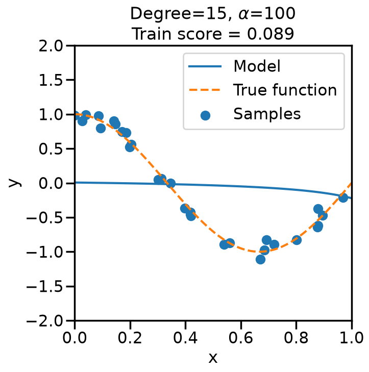
1.3 Examples of Other Commonly used Loss Functions in Linear Models
Thus far we have been discussing Linear Models in their most familiar context — minimizing the Mean Squared Error (MSE) with respect to the training data, optionally with an L2 regularization on the weight vector:
For now, let us ignore the regularization term, and just focus on the Loss term. Why should we minimize the squared error?1 Why not the absolute error or other possible loss functions? Let’s explore a few of those options and then see, in practice, how they affect the learned linear model.
1 It turns out that there are good theoretical reasons for this, for example, that a Linear Model trained via an L2/MSE Loss is the Best Linear Unbiased Estimate (BLUE) of the Linear Model, according to the Gauss-Markov Theorem, but, as we will see, there are other reasons to forgo these advantages.
1.4 Loss Functions for Regression
Beyond classical MSE, there are two main types of variants that are commonly used for regression problems:
Robust Loss Functions, that minimize the quadratic effect of the MSE loss for very large errors. These are typically used to make the trained model less sensitive to outliers in the training data.
Epsilon-Insensitive Loss functions, that ignore errors that are sufficiently small (within an \(\epsilon\) margin). These are typically used to incur some advantages in terms of sparsity in the learned model (for example, in Support Vector Methods, which we will see later).
In reality, these two variants can be combined in different ways, which we will see reflected below, but as a summary, these are:
Absolute Loss: \(|y - \hat{y}|\)
Huber Loss: A squared loss for small errors, and then transitioning to an absolute loss for large errors.
Epsilon-Insensitive Loss: A loss that is zero for errors up to \(\epsilon\) and then uses absolute loss for larger errors.
Squared Epsilon-Insensitive Loss: Similar to Epsilon-Insensitive Loss, but uses squared loss for errors larger than \(\epsilon\).
Of course, you could imagine more complex variants and combinations of these properties, but these capture the main properties and benefits that we will see below.
1.4.1 Handling Outliers using Robust Loss Functions
The below example demonstrates how applying a slightly different loss function (a Huber loss) to an otherwise identically formulated linear model can cause drastically different behavior in the trained model:
Code
# Create some data with Outliersn_samples =1000n_outliers =50Xr, yr, coef = make_regression(n_samples=n_samples, n_features=1, n_informative=1, noise=10, coef=True, random_state=0)# Add outlier datanp.random.seed(0)Xr[:n_outliers] =3+0.5* np.random.normal(size=(n_outliers, 1))yr[:n_outliers] =-3+10* np.random.normal(size=n_outliers)yr/=10yr +=10line_X = np.arange(-5, 5)figure = plt.figure(figsize=(9, 9))plt.scatter(Xr, yr,facecolors='None',edgecolors='k',alpha=0.5)# Loss Options: huber, squared_error, epsilon_insensitive, squared_epsilon_insensitivelosses = ['huber', 'squared_error']for loss in losses: model = SGDRegressor(loss=loss, fit_intercept=True, max_iter =2000, penalty='l2', alpha=.001, epsilon=1, tol=1e-3) model.fit(Xr, yr)# Predict data of estimated models line_y = model.predict(line_X[:, np.newaxis]) plt.plot(line_X, line_y, '-', label=loss,alpha=1)plt.axis('tight')plt.legend(loc='best')plt.show()
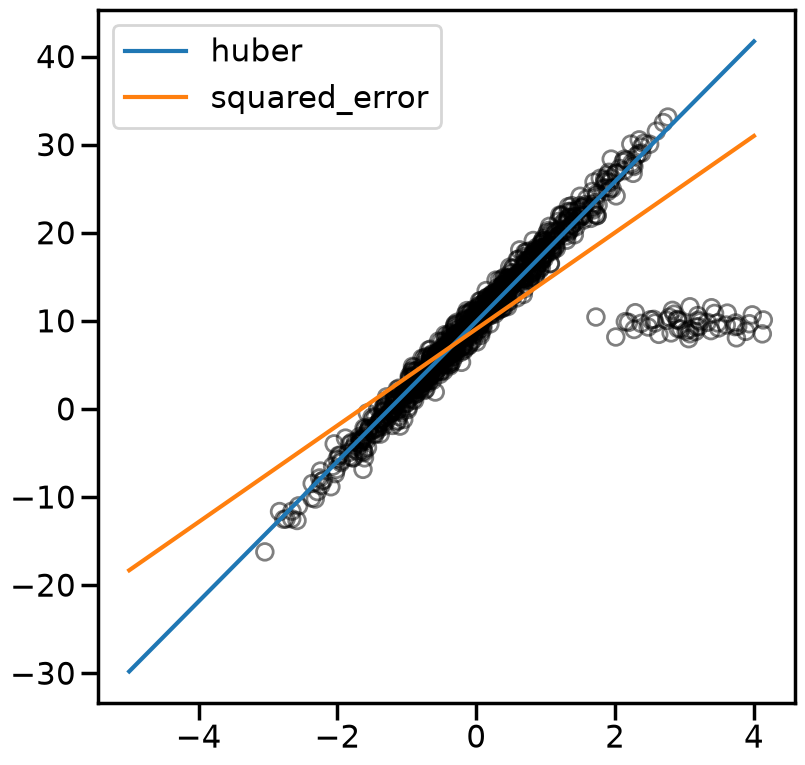
1.5 Loss Functions for Linear Classification
Thus far we have only discussed Regression problems, where we are modeling a continuous output (e.g., \(y=w^T\cdot x\)). However, Linear Models can also be used for Classification problems, where the output is discrete (e.g., \(y \in \{0,1\}\) or \(y \in \{-1,1\}\)). A naive approach to handling this, would be to just train a regression model as per before, but then just threshold the output at some value to derive the class label. For example, we can take the below binary data:
Code
from sklearn.datasets import make_classificationX_cls, y_cls = make_classification(n_features=1, n_redundant=0, n_informative=1, random_state=1, n_clusters_per_class=1, flip_y=0.0, class_sep=1)plt.figure()plt.xlabel('x')plt.ylabel('True or False')plt.scatter(X_cls, y_cls, marker='o', facecolors='none', edgecolors='k')plt.show()
We can see from the above that this is not entirely what we want – for example, just setting the class cutoff at 0.5 would not produce a classification boundary that would be optimal. In contrast, we can modify the loss function to more accurately project the \(w^T\cdot x\) linear model into a classification context.
We do this by modifying the loss function from Mean Squared Error to something like: \[
y_i\cdot(w\cdot x_i)
\] where \(y_i = \pm 1\) such that if \(y_i\) and \(w\cdot x_i\) point have similar signs, then the decision function is positive, otherwise it is negative.
With this change, we are now interested primarily with how the behavior of the loss function when we are in the negative regime (i.e., misclassified points):
TipExperiment: Effect of Linear Model Classification Losses
In the below experiment, try modifying the different classification loss functions and re-running the model. You will see a dark solid line representing the decision boundary, and dashed lines representing where the decision boundary is +1 or -1. What do you notice?:
For the perceptron loss, what behavior do you observe if you re-run this model multiple times? Why do you observe this behavior?
Comparing the hinge loss to the perceptron loss, the loss functions look remarkably similar, yet they have very different behavior in the model. Why do you think this is?
Comparing the squared error versus log loss versus hinge, what sorts of differences in behavior do you observe? Thinking about the location of the decision boundary and the shape of the loss functions, why do you think they behave differently?
Code
from sklearn.svm import LinearSVC# Try modifying these:#====================loss ='squared_error'#loss = 'perceptron'#loss = 'log_loss'#loss = 'hinge'#loss = 'modified_huber'#loss = 'squared_hinge'# Also try the effect of Alpha:# e.g., between ranges 1e-20 and 1e0#=============================alpha=1e-3# You can also try other models by commenting out the below:model = SGDClassifier(loss=loss, fit_intercept=True, max_iter=2000,tol=1e-5, n_iter_no_change =100, penalty='l2',alpha=alpha) # If you would like to compare the SGDClassifier with hinge loss to LinearSVC, you can uncomment the below:#model = LinearSVC(loss='hinge',C=1e3)model.fit(X_2d, y_2d)plt.figure(figsize=(9, 9))h=0.01x_min, x_max = X_2d[:, 0].min() -.5, X_2d[:, 0].max() +.5y_min, y_max = X_2d[:, 1].min() -.5, X_2d[:, 1].max() +.5xx, yy = np.meshgrid(np.arange(x_min, x_max, h), np.arange(y_min, y_max, h))# Plot the decision boundary. For that, we will assign a color to each# point in the mesh [x_min, x_max]x[y_min, y_max].ifhasattr(model, "decision_function"): Z = model.decision_function(np.c_[xx.ravel(), yy.ravel()])else: Z = model.predict_proba(np.c_[xx.ravel(), yy.ravel()])[:, 1]Z = Z.reshape(xx.shape)vmax =max(abs(Z.min()),abs(Z.max()))cm = plt.cm.RdBuplt.contourf(xx, yy, Z, cmap=cm, alpha=.5, vmax = vmax, vmin =-vmax)levels = [-1.0, 0.0, 1.0]linestyles = ['dashed', 'solid', 'dashed']colors ='k'plt.contour(xx, yy, Z, levels, colors=colors, linestyles=linestyles)plt.scatter(X_2d[y_2d==1,0], X_2d[y_2d==1,1], marker='+')plt.scatter(X_2d[y_2d==0,0], X_2d[y_2d==0,1], marker='o', facecolors='none', edgecolors='k')plt.show()
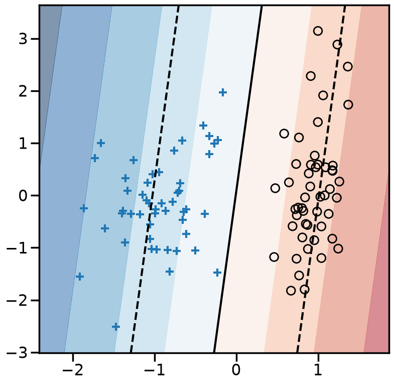
1.6 Penalty Functions: Example of How \(L_p\) Penalty Changes Loss Optima
OK, so we have seen how different loss functions can affect the learned linear model. But what about the penalty function? How does changing the penalty function affect the learned model? Let’s explore this with a simple example by again returning to fitting a line. In this case, we will fit an actual “line” to the data, by which I mean:
# Generate noisy data from a line####################### Change Me!w1_true =5w0_true =2noise =0.001#################true_func =lambda x: w1_true*x+w0_truenum_samples =50np.random.seed(2) # fix the draw so the line data do not depend on earlier cellsx_line = (np.random.rand(num_samples)-0.5)*20y_line = true_func(x_line)+np.random.normal(scale=noise,size=num_samples)
Code
plt.figure()plt.scatter(x_line, y_line)plt.show()
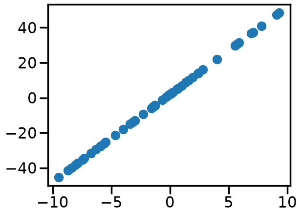
In this case, since we have very little noise (although you can play with this if you would like), you can see that if we put in the true intercept and slope, we get zero (or close to zero) training objective.
This tells us the objective at the true parameters, but now let’s visualize how the total objective (training error + penalty) varies as we change the parameters. To do this, we can compute the total objective over a grid of possible values for \(w_0\) and \(w_1\), and then plot the contours of this objective function:
Code
A, B = np.meshgrid(np.linspace(-10, 10, 201), np.linspace(-10, 10, 201))N,M = A.shapefloss = np.vectorize(loss)def generate_new_data(a=5,b=5): x = (np.random.rand(num_samples)-0.5)*20#y = true_func(x)+np.random.normal(scale=1,size=num_samples) y = a*x+b+np.random.normal(scale=1,size=num_samples)return x,ydef generate_z_grid(alpha,order): Z_noalpha = floss(A.flatten(),B.flatten(),0).reshape((N,M)) alpha=alpha Z = floss(A.flatten(),B.flatten(),alpha,order) min_ind = np.argmin(Z) Amin = A.flatten()[min_ind] Bmin = B.flatten()[min_ind] Z = Z.reshape((N,M))return Z_noalpha, Z, Amin, Bminget_levels =lambda z: [np.percentile(z.flatten(),i) for i in [0,0.5,1,2,5,10,15,30,40,50,75,95,100]]#levels = [np.percentile(allz,i) for i in [0,0.5,1,2,5,10,15,30,40,50,75,95,100]]#levels = [np.percentile(allz,i) for i in np.logspace(-2,3,10,base=3)]def plot_objective(alpha=0,order=2): Z_noalpha, Z, Amin, Bmin = generate_z_grid(alpha,order) plt.figure(figsize=(7,7)) plt.vlines(0,-10,10,alpha=0.25,colors='r',linestyles='solid') plt.hlines(0,-10,10,alpha=0.25,colors='r',linestyles='solid') plt.contour(A,B,Z_noalpha,10,levels=get_levels(Z_noalpha),linestyles='solid',cmap='Greys_r',alpha=0.05) plt.contour(A,B,Z,10,levels=get_levels(Z),linestyles='solid',cmap='Greys_r',alpha=0.5) plt.scatter([0],[0],marker='D',s=50,c='r') plt.scatter([w1_true],[w0_true],marker='*',s=400) plt.scatter([Amin],[Bmin]) plt.xlabel('a') plt.ylabel('b') plt.title('Optima: a={:.2f}, b={:.2f}'.format(Amin,Bmin)) plt.show()
Here we can see the true optimal parameters as a blue star, the objective function contours as dark gray lines, and the red diamond shows the point where both weights are zero. The orange circle shows the minimum point of the objective function. If you increase the value of alpha in the drop down, this will increase the penalty weight, and you can see how both the objective and the optimal point change. Moreover, you can change the p-norm order in the penalty to see what effect this has on the total objective function.
TipExperiment: How do the different penalty terms affect the Objective Function and the optimal weight?
Try modifying the following:
As you increase the penalty weight under the L2 norm, how does the objective landscape change?
If you use a p-order that is less than 2, how does this alter the objective landscape?
The L1 norm is known to induce sparsity in the optimal weights. Do you observe this in the objective landscape? Why or why not?
Different types of regularization within the p-norm family are often referred to as “Shrinkage” operators. Why do you think this is the case, based on what you observe?
If my goal is to induce sparsity, it would make sense to consider the L0 norm, which just counts the number of non-zero entries in a vector. Based on the plots below, why won’t this work?
To help visualize the experiment above, let’s try plotting, for different norm orders, the path that the coefficients take as we set alpha = 0 (no regularization) to a large number (essentially fully regularized). Now the light green contour represents just the contribution to the objective from the training error (no regularization), and the light gray contour shows the contribution from the penalty term (no training error). The blue line shows how the optimal weight changes as we increase the penalty weight from 0 to a large number.2
2 Note how I can visually find the optimal weight by fixing a given iso-contour of the regularization term (the gray lines) and then finding the point along that iso-contour where the green contour is minimized.
1.7 Summary of How to Select a Loss or Penalty function
In class, we reviewed a couple of different forms of loss functions and penalty functions and talked a bit about the criteria for selecting them. Below is a very short summary of these.
1.7.1 Loss Functions for Regression:
If you have no prior knowledge of the function or data, then selecting an L2 type loss (like the Mean Squared Error) is reasonable. When data nicely behaves w.r.t. a linear model (e.g., features are uncorrelated, errors in the linear model are uncorrelated, have equal variances, and expected error of zero around the linear model, etc.) then a Linear Model with an L2 Loss is the Best Linear Unbiased Estimate (BLUE) according to the Gauss-Markov Theorem.
If you have reason to believe that the data will have outliers or otherwise need to be robust to spurious large samples, then L2 loss will not be robust to this (as we saw in Lecture). For this, moving to an L1 type loss (like an Absolute Loss or Huber loss) will make the model less sensitive to outliers. It is one approach to handling Robust Regression.
If you need to have the model’s loss be dominated only by a handful of points/data as opposed to all of the data, then epsilon-insensitive loss is appropriate since many points well-fit by the model will have “zero” loss. For things like Linear Models, this has limited usefulness right now. However, when we “kernalize” Linear models in “Kernels” week, you will see that this is a big deal, and it is what gives rise to the “Support Vector” part of “Support Vector Machines”. Specifically, decreasing epsilon towards zero increases the number of needed Support Vectors (can be a bad thing), and increasing epsilon can decrease the number of needed Support Vectors (can be a good thing). This will make more sense in a few week’s time.
1.7.2 Loss Functions for Classification:
Zero-One loss sounds nice, but is not useful in practice, since it is not differentiable.
Perceptron loss, while of historical importance, is not terribly useful in practice, since it does not converge to a unique solution and an SVM (i.e., Hinge Loss below) has all of the same benefits.
If you need a simple linear model which outputs actual probabilities (like, 95% sure the component has failed), then the log-loss does this, via Logistic Regression and allows you to calculate classification probabilities in closed form.
\(L_2\) Norm penalties on the weight vector essentially “shrink” the weights towards zero as you increase the penalty weight. Adding this kind of penalty to a linear model has different names, depending on which community of people you are talking with. Some of these other names are: (1) Tikhonov regularization, (2) Ridge Regression, (3) \(L_2\) Shrinkage Estimators, or (4) Gaussian Weight Priors. I find looking at the penalty term itself more helpful at understanding the effects rather than memorizing the different names.
\(L_0\) Norm penalties, while conceptually interesting since they essentially “count” entries in the weight vector, are not practically useful since they are not differentiable and are thus difficult to optimize.
\(L_1\) Norm penalties are a compromise between \(L_2\) and \(L_0\) in that they promote sparsity in the weights (some weights will become zero) but are (largely) differentiable, meaning that you can meaningfully optimize them (unlike \(L_0\)). Shrinking certain weights to zero in this way can be useful when (1) you are in the \(n \ll p\) regime (many more features than data points) where the model is underdetermined and (2) you want some degree of model interpretability (it sets many weights to zero). Some of these other names for this kind of linear regression with this penalty are the LASSO (least absolute shrinkage and selection operator).
\(L_\infty\) (where p is really large) essentially penalize the size of the biggest element of the weight vector (w). While there are some niche instances where this kind of norm is useful for a Loss function (e.g., Chebyshev Regression), I have rarely seen meaningful use cases in practice where this makes sense as a penalty term for the weight vector.
Combinations of penalties. For example, a common combination is combining both an \(L_2\) and \(L_1\) penalty on the weights, as in: \(\Omega(w) = \alpha ||w||_2 + \beta ||w||_1\). This particular combination is called “Elastic Net” and exhibits some of the good properties of \(L_2\) penalities with the sparsity inducing properties of \(L_1\) regularization.
1.8 Exercises
The exercises below reuse the data and code from this chapter, so run the chapter’s cells first. Rough time estimates are in the titles. Worked solutions are collected in the Exercise Solutions appendix, but try each one before looking.
NoteExercise 1 (~4 min): Is it linear?
A model is linear when it is linear in its parameters, not necessarily in its inputs. For each of the candidate models below (with parameters \(w_i\), \(a\), \(b\) and input \(x\)), decide whether it is (i) a linear model as written, (ii) not linear as written but can become one after we transform either \(y\) or \(x\) (and if so, say which one or both and how you would transform it), or (iii) not a linear model in any simple way and cannot be made linear even through simple transformations.
\(y = w_0 + w_1 x + w_2 x^2\)
\(y = a\, e^{b x}\)
\(y = w_0 + w_1 \log x + w_2 \sqrt{x}\)
\(y = w_1 \sin(w_2 x)\)
\(y = a\, x^{b}\) (for example, the Basquin law relating stress amplitude to cycles to failure)
\(y = w_0 + \dfrac{w_1}{w_2 + x}\)
\(y = \dfrac{1}{w_0 + w_1 x}\)
For the models you transformed: if the measurement noise on \(y\) is additive and Gaussian, is it still additive and Gaussian after your transformation? Why does this question matter in the context of this chapter?
The below exercise two gives you a few functions that are each a sum of simple terms. Run the cell below to see the candidate functions and to sample noisy data from one of them.
Code
# Four candidate functions, each a sum of a few simple terms of xcandidate_functions = {"A": lambda x: 2.0* np.sqrt(x) +0.5* np.cos(3.0* x),"B": lambda x: np.log(1.0+ x) +0.1* x**2,"C": lambda x: np.sin(x) + x * np.exp(-x),"D": lambda x: 0.2* x**2-3.0* np.sqrt(x) + np.cos(x),}def sample_candidate(name, n_points=60, noise_std=0.1, seed=0):"""Return noisy samples (x, y) of one of the candidate functions on x in [0, 5].""" rng = np.random.default_rng(seed) x = np.sort(rng.uniform(0.0, 5.0, n_points)) y = candidate_functions[name](x) + rng.normal(0.0, noise_std, n_points)return x, y# Pick a candidate here -- you can change this to "B", "C", or "D" to see different functionscandidate ="A"x_ex, y_ex = sample_candidate(candidate)x_new = np.array([0.5, 2.5, 4.5]) # inputs at which to predictplt.figure(figsize=(8, 5))x_dense = np.linspace(0, 5, 200)plt.plot(x_dense, candidate_functions[candidate](x_dense), '--', label="True function")plt.scatter(x_ex, y_ex, label="Noisy samples")plt.xlabel("x")plt.ylabel("y")plt.title(f"Candidate function {candidate}")plt.legend()plt.show()
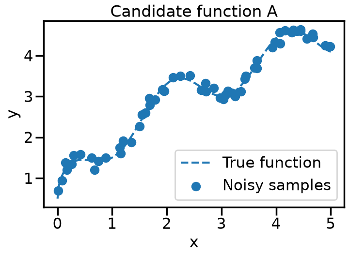
NoteExercise 2 (~8 min): Build your own feature expansion
Each candidate function above is a sum of a few simple terms, so, just like the polynomial case at the start of the chapter, a linear model can fit it exactly once it has the right features. Pick one candidate (Feel free to modify and re-run the code cell above to generate data from different candidate functions).
Write a function that turns the input array x into a feature matrix whose columns are the terms you think you need (the polynomial example used PolynomialFeatures to do this for you in the earlier notebook, but you can implement this however you like).
Fit a LinearRegression on x_ex, y_ex using your features and compare the fitted weights with the coefficients in the candidate function.
Predict \(y\) at x_new and compare with the true function.
If you have time: give the model the wrong features, for example polynomial features of degree 3, and look at what happens to the fit near the ends of the interval.
Code
# Here is where you can place your code to try this example if you are running this notebook locally or in binder.
The next two exercises return to the line-fitting problem from the penalty section, where the data came from \(y = 5x + 2\). Run the cell below to produce the figure for Exercise 3.
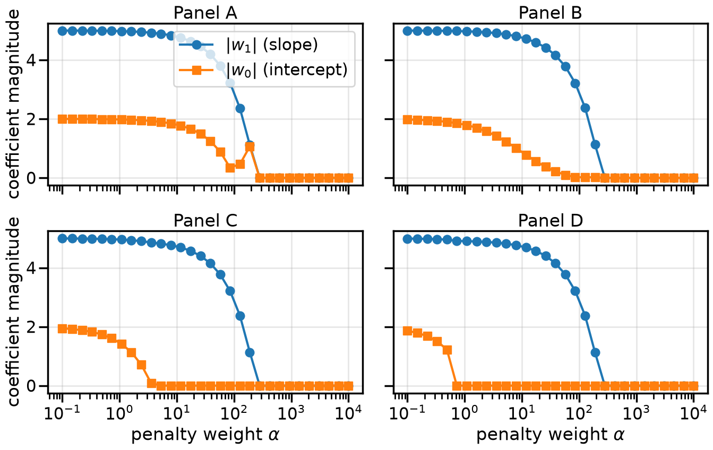
NoteExercise 3 (~5 min): Match the shrinkage path to the norm
Each panel above shows how the two fitted coefficients of the line \(y = w_1 x + w_0\) shrink as the penalty weight \(\alpha\) grows, for a penalty \(\alpha\,||\mathbf{w}||_p\) with one of \(p \in \{0.5, 1, 2, 100\}\) (the last one is essentially the \(L_\infty\) norm).
Match each panel to its \(p\). Write one sentence per panel saying which feature of the curves gave it away.
The true intercept (2) is smaller than the true slope (5). Under which norms does the smaller coefficient reach exactly zero while the other is still clearly non-zero? Why does that happen for those norms and not the others?
Run the cell below to produce the figure for Exercise 4. It refits the outlier data from the robust regression section with three different losses.
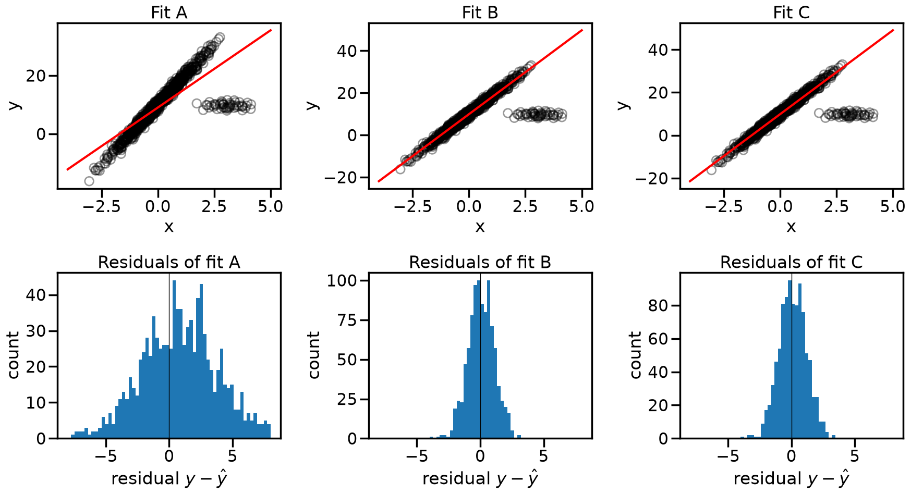
NoteExercise 4 (~5 min): Which loss made this fit?
The three fits above were trained on the same outlier data with the squared loss, the Huber loss, and the epsilon-insensitive loss (with \(\epsilon = 1\)), in a shuffled order. The bottom row shows the histogram of residuals \(y - \hat{y}\) for each fit.
One of the fits is clearly different from the other two. Which loss produced it? Point to two features of its residual histogram that give it away.
Can you tell the remaining two fits apart from these plots? Look back at the loss-shape plot earlier in the chapter and explain why these two losses lead to almost the same line on this data even though their formulas differ.
Under what kind of data would you expect those two losses to give visibly different fits?
The next two exercises use a hinge-loss classifier trained on the “moons” data from the classification section. Run the cell below to produce the figure. The left panel shows the decision boundary (solid) and the margins where the decision function equals \(\pm 1\) (dashed), with six numbered points and a dashed line from each to the boundary. The right panel shows the hinge loss as a function of the signed margin \(z = y\, f(\mathbf{x})\), with four positions marked A to D.
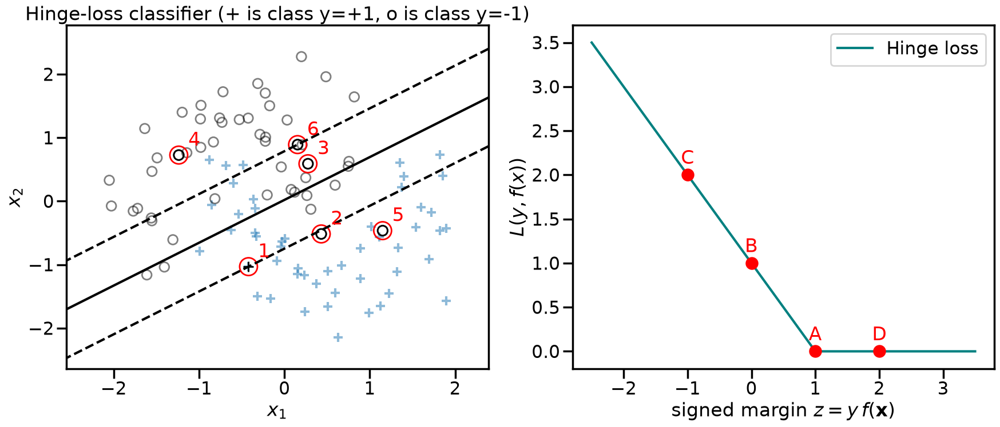
NoteExercise 5 (~6 min): Where do these points sit on the hinge loss?
The classifier above was trained with the hinge loss, so every point contributes \(\max(0,\, 1 - y\, f(\mathbf{x}))\) to the training loss, where \(y = \pm 1\) is the true label and \(f(\mathbf{x})\) is the decision function (zero on the solid line, \(\pm 1\) on the dashed lines).
For each numbered point, decide which marked position on the loss curve (A, B, C or D) it is closest to. Use the point’s class and its position relative to the solid and dashed lines; you do not need any numbers.
Which points contribute exactly zero loss? Among those, which ones sit exactly at the kink in the hinge loss (position A)?
In a Support Vector Machine (SVM), the points at the kink and those with positive loss are the support vectors which give the method its name. In fact, moving any other data points slightly does not change the boundary at all for such models. Why is this? Which of the six points could you delete without changing the classifier?
Run the cell below to produce the figure for Exercise 6. It evaluates five of the classification losses from this chapter on the same six numbered points from Exercise 5, but labels the losses only with letters.
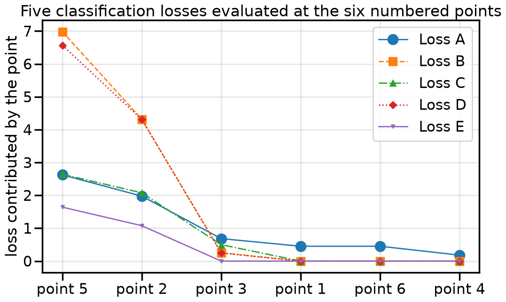
NoteExercise 6 (~5 min): Name the classification loss
The plot above evaluates five losses from the classification section (hinge, perceptron, log loss, modified Huber, squared hinge) at the six numbered points of Exercise 5, sorted from the most misclassified point on the left to the most confidently correct point on the right. The losses are labelled only A to E.
Identify each loss. State the one feature of each curve that identifies it (for example: which points get exactly zero, how fast the loss grows on the left, whether it ever reaches zero). Hint: once you have found the hinge loss, you can read off the signed margin \(z\) of every point from it, and then check the other formulas by hand.
Two of the losses give exactly zero for every correctly classified point, however close to the boundary. Which two, and what does that imply about where the decision boundary ends up when you train with them? (Look back at the perceptron question in the classification experiment.)
NoteExercise 7 (~3 min): Choose the penalty
For each situation, argue for an \(L_1\) or an \(L_2\) penalty on the weights (or a combination), in two or three sentences each.
You are fitting a linear fatigue-life model with 40 candidate features (load amplitudes, temperatures, surface measures, several of them strongly correlated). The report must name the handful of features that actually matter.
You are fitting a sensor calibration model that is re-fit every month on a fresh batch of data. Several input channels are nearly redundant, and the plant engineers complain when the coefficients jump around between months.
Run the cell below to produce the figure for Exercise 8. Each panel shows the training-error contours (green) and the penalty contours (grey) for one \(p\)-norm, together with the same coefficient path (blue), which was computed for a single value of \(p\) as \(\alpha\) increases.
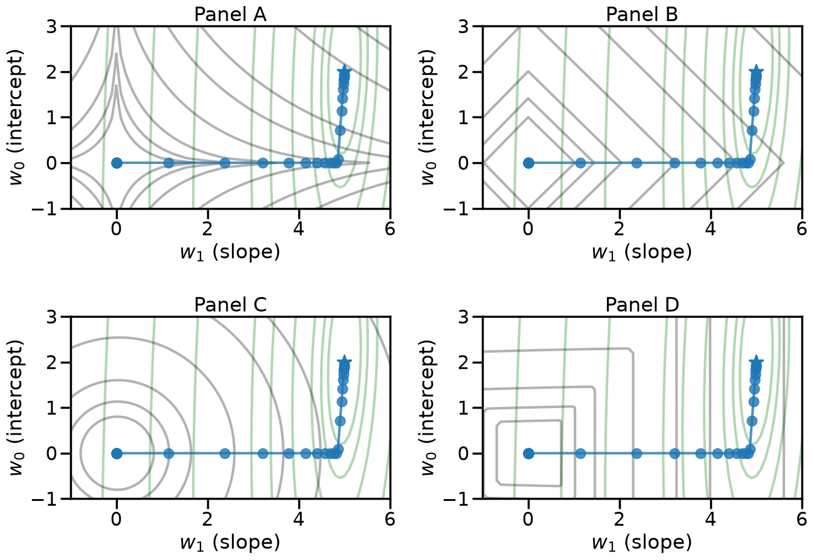
NoteExercise 8 (~3 min): Which penalty produced this path?
The blue path is the same in all four panels: it is the sequence of optimal \((w_1, w_0)\) as the penalty weight \(\alpha\) grows from small to large for one choice of \(p\). The grey contours differ between panels because each panel uses a different \(p \in \{0.5, 1, 2, 100\}\).
Identify the \(p\) of each panel from the shape of the grey penalty contours.
Only one panel shows the penalty that actually produced the blue path. Which one is it? Explain, using the way the path meets the axis \(w_0 = 0\), why the other three penalties could not have produced it.
Sketch (or describe) how the path would look in each of the other three panels.
The last exercise is more open-ended. Run the cell below to load the measurements.
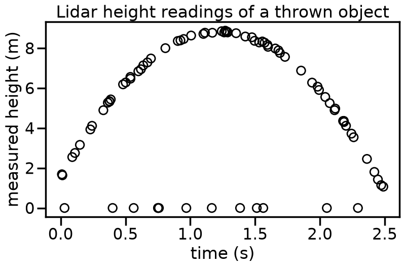
NoteExercise 9 (~12 min): Tracking a thrown object with a flaky lidar
A lidar tracks a ball thrown upwards and records its height over time in the arrays t_lidar and height_lidar. Whenever the lidar misses the ball, it reports a height of exactly zero, and it does so fairly often. Your job is to recover the launch height, the launch speed and the gravitational acceleration from these readings using the tools of this chapter.
Decide what model to fit. Which features of \(t\) do you need so that the model is still linear in its parameters? What does each parameter mean physically?
Decide how to treat the dropped readings. Rather than deleting them by hand, choose a loss function from this chapter that will not be thrown off by them, and say why.
Fit the model and report your estimates of the three physical quantities. The ball was thrown near sea level, so you can check one of them.
Fit the same model with the squared loss and compare. Which estimate suffers most from the dropped readings, and can you explain why from the shape of the data?
If you use SGDRegressor, remember that it is sensitive to the scale of the features; HuberRegressor from sklearn.linear_model is a convenient alternative that fits the Huber loss directly.
Code
# Here is where you can place your code to try this example if you are running this notebook locally or in binder.